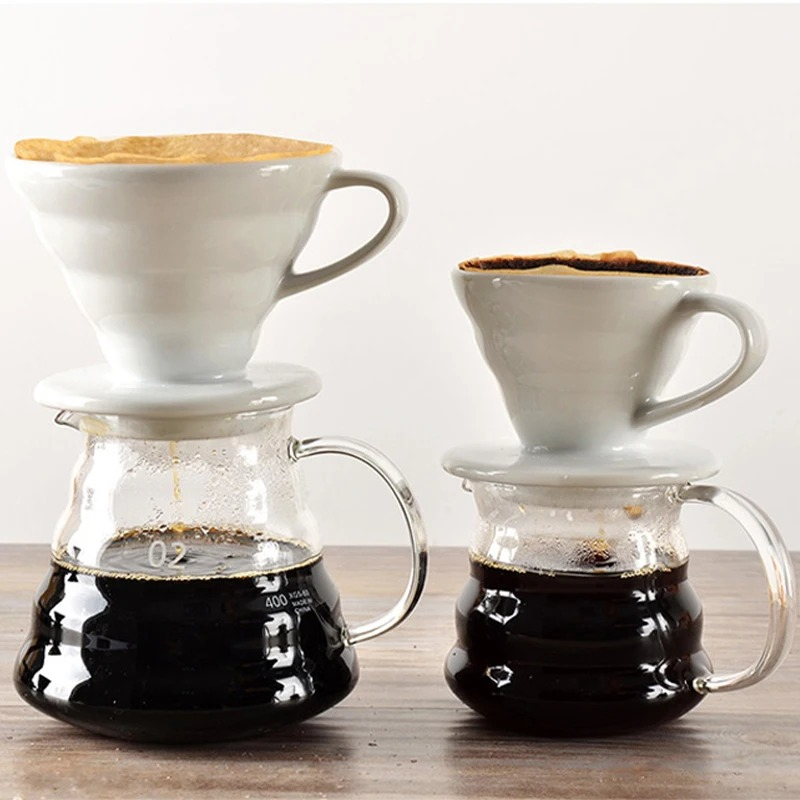

Pour Over Coffee

Description
Making your own pour over coffee by the cup at
home can significantly elevate the taste and
overall experience of your beans.
Many coffee enthusiasts will tell you it's
required to precisely measure weights and
temperatures to get the best and most
consistent brew. Maybe they're right,
but I can't be bothered so this recipe
doesn't require a food scale or fancy
kettle.
Ingredients and Equipment
- Single size pour over cone (ceramic or plastic)
- Your favorite 12oz standard coffee mug
- Size 2 cone paper coffee filter
- Electric kettle. If you don't have one
you can just boil water in a pot and use
any vessel with a spout for the pour
- Coffee grinder. Electric is fine, but
a burr grinder gives a more consistent
grind if you happen to have one
- A big handful of whole coffee beans
Steps
- Start boiling some water. You want a little
more water than will actually fit in your mug.
- Grind your beans. The finer you grind, the
longer the coffee will brew and the more
concentrated (stronger) it will be.
Feel free to experiment on different
beans with different grinds to get brews you like.
- Assemble and warm your coffee system. Put
the cone on top of your mug and put the filter
inside, and once the water has cooled slightly
from boiling pour enough in to fully wet the
paper and fill about an inch of your mug.
Pick up the mug and swish the water around to
distribute the heat around the walls, then
discard water.
- Set your cone back in place and add the
ground coffee to the filter. Pour hot water over in a
gentle stream, just enough to thoroughly wet
the coffee grounds.
- Stop and wait 30 seconds. This allows the
coffee to "bloom", aerating the grounds and
developing the flavor.
- Pour in more water in a spiralling motion to re-saturate
the grounds and fill the cone, then top off as
needed until the brewed coffee fills your mug.
- Remove cone and discard filter, then enjoy!